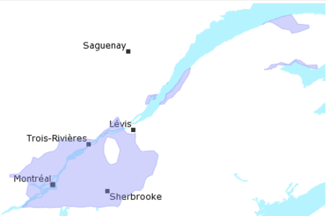

| Métadonnées | |
|---|---|
| Titre abrégé | Aire désignée |
| Description | La couche « Aire désignée (surface) » résulte d’un assemblage hétérogène de couches « aired_s » natives en format E00 issues des feuillets (tuiles) numériques de la Base de données topographique du Québec (BDTQ) qui ont été acquis par la Cartothèque. Notre collection n'est pas complète et ne comprend donc pas les 2765 feuillets numériques disponibles de la BDTQ. La couche « Aire désignée (surface) » est représentée et disponible en couverture discontinue « bdtq_aired_s_poly ». L’intégrité de la topologie se limite aux tuiles définies selon le système québécois de référence cartographique (SQRC). L’usager doit donc lui-même corriger cette topologie au besoin. L’ensemble des champs originaux (compris dans les données E00) a été conservé lors de l’assemblage et trois nouveaux champs ont été ajoutés : dat_acqui : Date d’acquisition des données par la Cartothèque dat_charg : Date du chargement des données dans le SGBD spatial no_feuil : Numéro de feuillet auquel l’élément géométrique appartient. |
| Sujets |
|
| Auteur | Géoboutique Québec - Ministère de l'Énergie et des Ressources naturelles |
| Données géospatiales | |
| Type de représentation spatiale | vectorielle |
| Nombre d'objets géometriques | EPSG:4269 |
| Identifiant du système de référence | 11836 (surface) |
| Légende | |
| Échelles (dénominateur) | 1000 |
| Étendue temporelle | de 1997 à 2015 |
| Boîte géographique |  |
| Contact | |
| Cartothèque de l'Université de Montréal Tél. 514 343-8038 Fax 514 343-8008 520, chemin de la Côte-Ste-Catherine, Université de Montréal MontréalQuébecH2V 2B8 Canada carto@umontreal.ca |
|